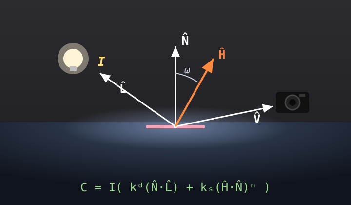
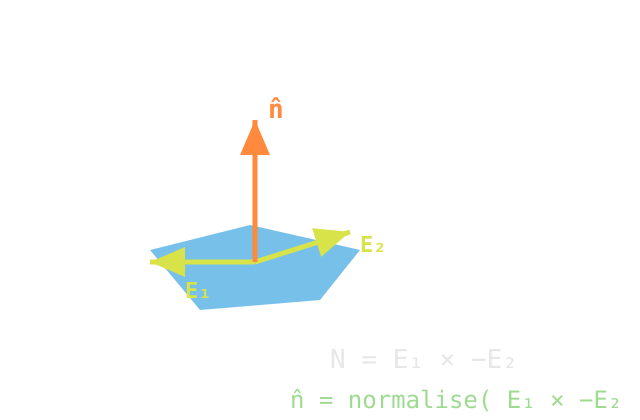
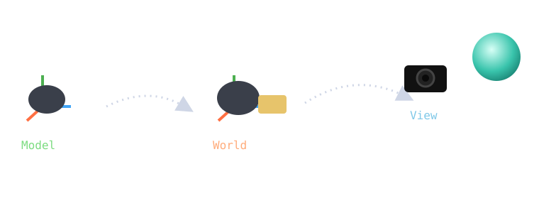
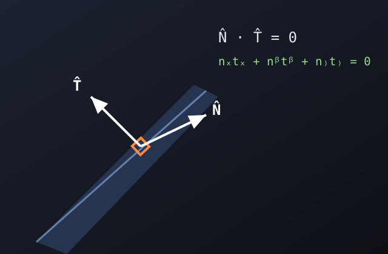
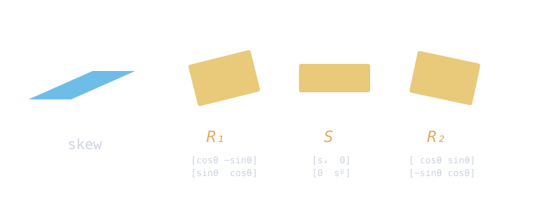

How a faceted mesh of flat triangles becomes a smooth, lit surface — and the matrix maths that keeps the lighting correct along the way.
Everything in this chapter hangs off one lighting equation. The art is where in the pipeline you evaluate it — per face, per vertex, or per pixel — and how you keep your normals honest when the model is transformed.
A 3D model is just a mesh of flat triangles. Render each triangle with a single colour and you get an obviously faceted object — you can see every polygon, like the chunky teapot on the left of the lecture's opening slides.
We want the smooth, ceramic look on the right instead. The geometry hasn't changed — the mesh is just as coarse. What changes is how we shade it: where we sample the lighting equation and how we treat the normals. That's the whole chapter.
Subdividing the mesh (more triangles) helps but is expensive. Smart shading gets most of the way there for free.
Three coloured spheres run through the slides as a visual key:
| crimson | Flat shading — faceted |
| amber | Gouraud — smooth-ish |
| teal | Phong — smoothest |
Watch the same colours reappear in the demos.
Every shading method evaluates the same equation. Learn it once.

| N̂ | surface normal (unit) |
| L̂ | direction to the light |
| V̂ | direction to the viewer/camera |
| Ĥ | half-vector = normalize(L̂ + V̂) |
| I | light intensity / colour |
| kd, ks | diffuse & specular coefficients |
| n | shininess exponent (Phong exponent) |
Diffuse kd(N̂·L̂) — Lambert's law. Brightest where the surface faces the light; fades by the cosine of the angle. Independent of where you stand.
Specular ks(Ĥ·N̂)n — the shiny highlight. Peaks when the normal bisects light and viewer (i.e. Ĥ ≈ N̂). The angle ω between Ĥ and N̂ drives it; raising n tightens the highlight.
drag on the sphere to move the light · watch the highlight tighten as n rises
The lighting equation is full of N̂. A normal is a unit vector pointing straight out of the surface. For a flat triangle we get one from two of its edges with a cross product:

The cross product gives a vector perpendicular to both edges — i.e. perpendicular to the whole triangle. We normalise it because the lighting dot-products assume unit length. Edge order / sign decides which way it points (outward vs inward), so winding order matters.
The simplest scheme. Take the triangle's single face normal N̂, evaluate the lighting equation once, and paint the whole triangle that one flat colour.
Fast, but every facet is a uniform block, so adjacent triangles jump in brightness. The result is the unmistakable faceted look — the crimson sphere where you can count the polygons.
1. Compute the face normal (edge cross product).
2. Evaluate lighting once.
3. Fill the triangle with that colour.
Try the Flat button in the big demo (§07) — note how each facet is one solid tone.
Instead of one normal per face, store one normal per vertex (N̂₀, N̂₁, N̂₂) — usually the average of the normals of all faces meeting at that vertex, which "rounds off" the surface.
Now the lighting equation runs in the vertex shader, producing a colour at each corner: c₀, c₁, c₂. The rasteriser then blends those three colours across every pixel of the triangle.
Rasterisation blends vertex values with weights α, β, γ (they always sum to 1). A pixel's colour is α·c₀ + β·c₁ + γ·c₂. Near a corner, that corner dominates.
the same weights interpolate any per-vertex value — colour, depth, normals…
Same per-vertex normals. Different stage. That one change fixes the highlight.
In Phong shading the vertex shader passes the normals through as a varying vec3. The rasteriser interpolates N̂₀, N̂₁, N̂₂ across the triangle (with α, β, γ), giving an interpolated normal at every pixel:
Interpolating two unit vectors generally gives a shorter vector, so we re-normalise per pixel — that's the denominator. Then the fragment shader runs the full lighting equation per pixel using that fresh normal:
The normal varies smoothly across the face, so the specular peak can occur anywhere a pixel's normal happens to bisect light and viewer — even deep inside a triangle. Highlights are crisp and round.
The lighting maths now runs once per fragment instead of once per vertex. More expensive, but on modern GPUs it's the default for smooth specular surfaces.
A real software-rendered sphere. Switch the model and watch the same coarse mesh change character. Drag to rotate; toggle the wireframe to see the triangles underneath.
Flat: solid facets · Gouraud: smooth tone, soft highlight · Phong: crisp highlight. Same mesh throughout.
| Model | Evaluated | Interpolates | Highlights | Cost |
|---|---|---|---|---|
| Flat | once / face | nothing | blocky | cheapest |
| Gouraud | once / vertex | colours | can be missed | medium |
| Phong | once / pixel | normals | crisp, correct | priciest |
Before any shading, a vertex travels through a chain of spaces. Each object is born in its own model space, placed into a shared world space, then expressed relative to the camera in view space — finally projected to the screen (perspective or orthographic).

In a GLSL vertex shader these transforms are matrices. Lighting is normally done in view space, so positions and normals are carried there:
void main() { // position into view space (w = 1) vec4 mv = modelViewMatrix * vec4(position, 1.0); vPos = mv.xyz; vNormal = normalize(normalMatrix * normal); // not just modelView! gl_Position = projectionMatrix * mv; }
Notice the position uses modelViewMatrix, but the normal uses a different normalMatrix. Why they can't be the same matrix is the next — and trickiest — section.
Transform a normal with the model-view matrix and, under non-uniform scaling, it stops pointing out of the surface. Here's the fix and the proof.
A normal is defined by being perpendicular to the surface — i.e. perpendicular to every tangent T̂ lying in it:
A tangent is a difference of surface points, so it transforms like geometry — scale it by S and it still lies in the surface. But if we also scale the normal by S, the perpendicularity breaks.

Stretch the surface along x. With the wrong matrix the arrows tilt away from the surface; with the correct inverse-transpose they stay perpendicular.
with uniform scale both look fine — the bug only appears when sx ≠ sy
Start from the constraint and apply a scale S = diag(sx, sy, sz) to the tangent. We need a matrix Q on the normal so that the dot product stays zero:
Try Q = S (the naive choice). Then the dot product becomes
which only collapses back to nxtx+nyty+nztz when sx=sy=sz (uniform scale). Otherwise it ≠ 0 — the normal is wrong. Now try Q = S⁻¹:
The scale factors cancel exactly. Generalising from pure scale to any model-view transform gives the famous result:
For pure rotation/uniform scale, (MV)⁻ᵀ equals the rotation part, so people often get away with using MV directly — but it's only exactly right with the inverse-transpose.
The lecture's cow shows that a shear/skew isn't a primitive — it factors into a rotation, an axis-aligned scale, and another rotation:

This is exactly the Singular Value Decomposition, usually written
The two rotations are U and Vᵀ; the diagonal scale Σ holds the singular values. It tells you the principal stretch directions of any linear transform — and it's the rigorous way to reason about what a transform does to normals (the inverse-transpose effectively inverts that scale step), which is why §09's result falls out of it.
Seven questions in the COMP27112 style (written from the slide content — swap in quizzes.docx for the exact set). Score: 0 / 0 answered · 7 total
No real past papers were supplied this session, so these are written in the typical COMP27112 long-answer style for this topic. Click to reveal a model answer.
(a) Compare Gouraud and Phong shading in terms of the graphics pipeline. State one visual artefact of Gouraud shading and explain why Phong avoids it.
(b) Starting from the orthogonality condition N̂·T̂ = 0, derive why the inverse-transpose of the model-view matrix must be used to transform normals under non-uniform scaling.
(c) For C = I(kd(N̂·L̂) + ks(Ĥ·N̂)ⁿ), describe the role of each term, and state what happens to the highlight as n increases.